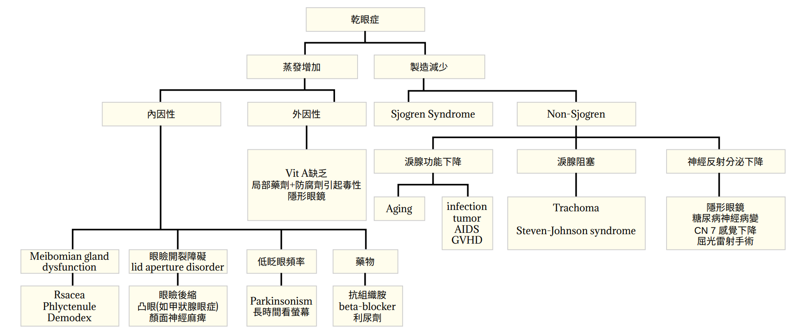
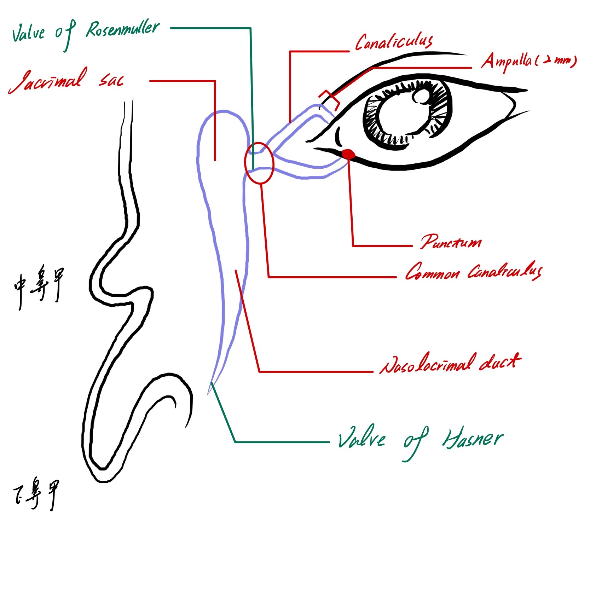

淚液系統
Saturday, March 15, 2025
11:24 AM
一、淚器(Lacrimal apparatus)
- 分泌系統
- 主淚腺(main lacrimal gland)：CN6、CN7調控反射分泌，製造95%淚液中的水分
- 副淚腺(Krause gland; Wolfring gland)：負責基礎分泌，在睡眠時減少導致睡醒眼睛乾澀
#補充：記憶法狼(wolf)和烏鴉(crow)飛在穹窿(fornix)哭泣(水層) ->這兩個腺體主要位於上下結膜穹窿
- 淚水組成
|
|
腺體 |
功能 |
|
脂質層 |
Meibomian gland, Zeis gland, Moll gland |
抑制蒸發(pour oil on troubled water的感覺) 閉眼擠壓可以使線體的油脂流出 |
|
水層 |
主、副淚腺 |
提供角膜氧氣 具有水、電解質、IgA、lysosome等抗菌 |
|
黏液層 |
結膜本身的goblet cell, crypts of Henle, Manz gland #補充記憶：一杯(goblet)亨利(Henle)美乃滋(Manz) |
具高分子量glycoprotein：有goblet cell本身分泌以及上皮細胞的transmembrane mucin 將角膜親水化幫助淚水分布 |

- 調控：
- 賀爾蒙調控：
- Androgen：lipid production
- Oestrogen & Progesterone：在結膜和淚腺有受體，可以調節水層分泌
- 神經調控：CN5、CN7
- 機械性：眨眼和眼瞼的開闔
二、乾眼症(Dry eye syndrome)=Keratoconjunctivitis sicca； Xerophthalmia是缺乏Vitamin A的分類；Xerosis為較嚴重有keratinization
- 成因：原因很多，跟眼睛局部問題、免疫系統、內分泌等有關，還有待研究。主要分為：淚液分泌不足以及蒸發量過高
- 診斷：尚無客觀的準確檢查
- Schimer's test
- 紙條插在下眼瞼fornix外1/3處，不要碰到角膜，5min後小於5mm為乾眼
- Rose Begal：針對黏蛋白及死細胞染色，若結膜角膜染色代表上皮受損
#補充：Flurescein：針對tight junction的破壞處染色 ->偏向物理性破壞
- Tear Breakup Time(BUT)
- 點Flurescein看淚膜裂解的時間，小於5秒為異常
- 症狀：有淚膜異常，較低的淚夜半月弧(<1mm)，合併角膜病變punctuate epitheliopathy，死亡上皮導致的filaments，黏液斑塊(mucous plaques)
- 成因：

- Sjogren Syndrome 造成的乾眼：
- 會有淚腺跟唾腺的淋巴浸潤
- 診斷：
- ANA(+) + Anti-SSA/B or RF
- Ocular staining
- Salivary gland biopsy
- 基本上不會降低情緒化或是反射引起的淚水產生
- Symptom and Sign
- Posterior blepharitis
- 結膜染色
- 淚膜(tear film)有lipid-contained mucin particles且淚膜半弧消失
- 角膜有superficial punctuated keratitis, filament with epithelium debris and mucus
- 治療：根據病因做處理
- Mild：保濕、多眨眼、人工淚液(以aqueous 的成分為主，parafilm模lipid成分，但mucin目前無法取代)
- Moderate：用不含防腐劑的人工淚液、steroid、tetracyclin(降低發炎)、topical cyclosporine-A(1-2%)、punctal plug(塞住canaliculus讓眼淚無法排除，可以考慮長期或永久)
- Severe：可以自體血清眼藥水、繃帶隱眼(bandage contact lens)、系統性抗發炎(可考慮Omega-3於、flax seed oil)
三、淚液引流系統
- 淚水製造引流順序：Punctum -> canaliculus -> common canaliculus -> valve of Rosenmuller -> lacrimal sac -> Nasolacrimal duct -> valve of Hasner

- Valve of Hasner：小孩先天溢淚為此處異常
- Valve of Rosemullar：防止淚囊後的液體回流
- 淚囊(Lacrimal sac)：medical canthal tendon的anterior/posterior limb之間
- 淚囊炎(Dacryocystitis)：medial canthal tendon的下方腫脹
- 淚囊腫瘤：medical canthal tendon的上下方都會腫脹
- 溢淚
- 成因：
- 淚水增多：發炎、乾眼等任何造成反射性流淚(reflex tearing)引起
- 淚水阻塞：引流系統的任何位置出問題
- 引流結構阻塞：發炎、受傷、腫瘤造成狹窄
- 功能性阻塞：通暢但仍流淚
- Horner's muscle：眼輪匝肌靠淚小管處，負責收縮擠眼淚，有問題造成Pumping差
- 檢查
- 理學檢查看有沒有眼瞼外翻、觸診淚囊硬度
- 裂隙燈可以看淚液半月弧
- 染劑消失測試(dye disappearance test)、Jones test：兩者都為看染劑是否流出來評估阻塞，但臨床上不常用太耗時
- 淚囊灌洗及探針術(lacrimal irrigationa and probing)：用鈍端的針筒從punctum進去灌洗，如果水流不過去，就把真躺成Ampulla水平角度，戳進去看哪邊卡住
- 另有淚囊造影跟淚液閃爍：用顯影劑和X-ray拍攝或是Tc-99m觀察淚水流向
- 先天溢淚
- 新生兒出生3-4周開始流淚
- 50%有怎阻塞，6%在製造眼淚時還沒有暢通才會溢淚
- 治療：
- 六個月前：topical Abx以及Criger message(沿著引流方向由上而下按摩
- 13個月後：還有症狀可以探針穿刺(probing)，成功率90%
- 放置導管：Silicon intubation，維持形狀暢通
- 鼻甲切除
- 氣球擴張術(Balloon dacryoplasty)
- 後天溢淚
- 成因：inflammation/inflammatroy>沾黏>單一管道堵塞
- 分類
- 原發性淚點狹窄(Primary punctal stenosis)：淚點擴大、ampulla切開、放支架治療
- 次發性淚點狹窄(Secondary punctal stenosis)：發生於淚點外翻後，電燒、內側結膜形成術
- 淚小管阻塞(Canalicular obstruction)：大部分成因不明，放導管、Conjunctivo-dacryocysto-thinostomy, CDCR可以從結膜導引至鼻腔流出
- 鼻淚管阻塞(nasolacrimal duct obstruction)：最常見，好發於50-60歲，慢性發炎相關，可以Dacryocystorhinostomy從淚囊倒流到中鼻道
- 淚器感染
- 淚小管炎(Canaliculitis)：
- 病因：主要由Gram(+)桿菌 Actinomyces israelii引起
- S/S：反覆黏液、膿瘍流出，單側溢淚，可能產生細菌結石，有含硫的砂礫結石
- 治療：把結石刮掉，切開引流併用抗生素灌洗
- 急性淚囊炎(Acute Dacryocystitis)
- 病因：鼻淚管阻塞引起Gram(+)葡萄球菌或是鏈球菌感染為主
- S/S：侷限下半(medial canthal tendon)淚囊紅腫溢淚
- 治療：熱敷及口服抗生素，避免irrigation以及probing
- 慢性淚囊炎(Chronic Dacryocystitis)
- 病因：同上
- S/S：較常見，按壓有膿流出，可能造成淚囊無痛腫大、溢淚
- 治療：局部抗生素、熱敷、考慮Dacryocystorhinostomy，做繞道
- 淚囊腫瘤(Lacrimal gland tumor)
- 病因：多為上皮細胞變異引起
- 症狀：
- 常無痛，位置會高於medial canthal tendon(這兩項可以和感染比較)
- 有溢淚、慢性淚囊炎、皮膚潰瘍等，嚴重包含眼球突出、複視、轉動受限等
- 類別
- 良性：中老年、生長緩慢，多型性腺瘤(Pleomorphic adeoma)等
- 惡性：年輕人、生長較快，Adenoid cystic carcinoma(佔50%以上)
- 治療：切除加放療，多型性腺瘤須作完整切除避免居部切片導致惡性化